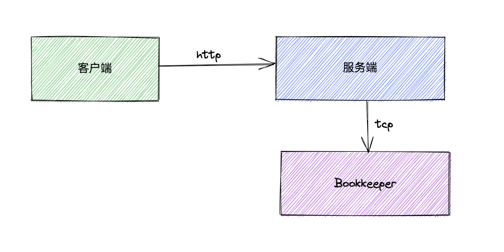

简析
schema是pulsar重要的功能之一，现在就一起从源码的视角看下管理流创建schema时客户端和服务端的表现
客户端
客户端主要经历以下四个步骤
-
创建Schema实例
根据数据类型创建相对应的实例，例如Avro创建AvroSchema、JSON创建JSONSchema等
-
获取处理Schema的对象
管理流PulsarAdmin对象获取SchemasImpl对象，这个对象是专门处理所有schema相关的操作。除此之外PulsarAdmin对象还维护着Clusters、Brokers、Tenants等等管理维护集群的重要对象，通过这些对象可以很好的管理维护Pulsar集群
-
构造SchemaInfo
通过Schema实例创建其对应的SchemaInfo信息，里面就包括这个schema的名字、schema的结构化信息、schema类型等等，最后SchemaInfo这个对象会转成字符串发到服务端
-
发送HTTP请求
通过post请求将数据发到服务端，这里是通过Java Rest库
javax.ws.rs-api进行处理的
服务端
服务端主要经历以下四个步骤
-
参数格式校验
- 校验租户、命名空间的是否有效(判空、是否有特殊字符)
- 从缓存中根据Topic获取其对应的TopicName对象
-
权限校验
- 判断是否是Topic的owner
- 判断当前用户是否有操作当前Topic的权限
-
SchemaRegistry注册schema
SchemaRegistryService是服务端处理所有schema相关的对象，而schema相关的读写操作是依赖它的成员SchemaStorage进行处理的，SchemaStorage的最终是通过Bookkeeper客户端对象发送写请求
-
写Bookkeeper
通过LedgerHandle对象向Bookkeeper服务端发送写请求
小结
schame新建流程概括起来就是，客户端构造schema信息，服务端负责schema校验，bookkeeper负责schema的存储
客户端源码解析
源码跟踪
下面是通过管理流创建schema的样例代码，核心就是通过PulsarAdmin.schemas获取schema对象，这个schema对象负责所有客户端跟schema相关的操作，包括schema的增删改查等。通过方法的第二个参数可以看到是通过Schema接口提供的静态方法AVRO来构造Avro格式的schema对象，除此之外Schema接口还提供了诸如JSON、KeyValue、PROTOBUF等静态方法提供对应数据格式的schema对象，这里如果将这块构造schema对象逻辑抽成简单工厂模式可能会更合适些

接下来就进入createSchema方法，顾名思义可以知道这个方法就是用于创建schema的，第一个参数是topic，第二个参数是SchemaInfo对象，这个对象包含了所有要新建的schema信息，这里会将它转换为PostSchemaPayload对象传递给下一个方法。PostSchemaPayload是用来请求到服务端的参数

这个方法并不会有返回值，sync方法是处理异步结果对象，它在正常写成功情况下不会做任何操作，但如果有什么错误会往外抛出异常。这里核心逻辑是在createSchemaAsync方法

可以看到这个方法的返回值是个异步对象，146行这里会获取当前topic对应的TopicName对象，并通过schemaPath方法构造WebTarget对象，这个对象中就包含着要请求的HTTP地址，主要是根据当前Topic的版本来决定请求服务端哪个版本的处理方法。除此之外还可以看到有通过Entity.json方法将PostSchemaPayload对象转换为HTTP请求的参数对象，转换逻辑是javax.ws.rs-api这个网络库封装的，就不进行跟踪了

这里就是客户端最后发送的地方，request方法中还会发送前的安全相关检查，async方法基本上就说明本次HTTP请求是异步的，而post方法也能看得出，这是一个POST类型的HTTP请求，再往后就是将请求发送出去了

不知是否有人好奇参数WebTarget长什么样子，通过通过调试可以看到值为
/admin/v2/schemas/public/test-namespace-jytixthzgatgirem/test-multi-version-schema-one/schema
此值仅供学习参考，具体这个值的构造逻辑如下

小结
简单归纳如下
- 通过Schema接口构造对应数据格式的schema对象，由此对象可得到schema相关的元信息SchemaInfo
- 构造请求目标的HTTP地址
- 通过
javax.ws.rs-api提供的库发送异步HTTP请求到服务端
服务端源码解析
源码跟踪
服务端的接收逻辑在SchemasResource类，这个类在org.apache.pulsar.broker.admin包下，这个包下全是处理管理流相关的操作，如果有做pulsar平台化需求的，这个包下的相关逻辑值得一读。
再来看看postSchema方法，首先是validateTopicName方法，这个方法就是对入参进行判空、是否有特殊字符做检查；接下来就是核心方法postSchemaAsync，通过方法名可以推断出这是个异步处理schema写请求的方法

postSchemaAsync方法看似复杂，实际上核心的就是133行，其余的方法大概说一下，validateOwnershipAndOperationAsync方法主要检查当前用户是否有新建schema的操作权限，getSchemaCompatibilityStrategyAsyncWithoutAuth方法相对复杂一些，放到后面详细讲解。那么再看回133行，其中getSchemaRegistryService方法获取的是SchemaRegistryServiceImpl对象，顾名思义可以知道Pulsar的SchemaResistry相关的功能都是由它进行处理，现在先看它的putSchemaIfAbsent方法

SchemaStorage对象是SchemaRegistryServiceImpl的核心成员，负责schema存储相关的操作。在新建schema时会调用它的put方法进行创建；这里有个trimDeletedSchemaAndGetList方法，如果put方法在创建schema时有任何异常，则此方法会去删除该新建的schema，避免写"一半"的情况发生，某种意义上这也是一种回滚的设计。

这里的getAll方法很重要，会根据schema的id来查询是否已经存在当前schema，有的话则将版本号加1。处理完之后就调用put方法

这里没什么逻辑，继续往下跟踪

getSchemaLocator方法会构造LocatorEntry对象，调用putSchema

由于是初次创建schema，因此直接走到337行；如果这个topic已经创建过schema则会读取之前的schema信息再新增，同时把版本号自增

在这里可以看得到构造IndexEntry对象，这是消息的索引对象，后续用来加速查询schema

这个方法的内容就很眼熟了(bookkeeper相关内容)，createLedger方法会先创建这个Ledger

在576行可以看到最终调用bookkeeper创建这个Ledger

再来看看addEntry方法，这里核心也是调用bookkeeper的ledgerHandle进行数据写入

这个方法是属于Bookkeeper客户端的逻辑了，通过方法注释可以看到，这个方法负责将数据异步写入到一个打开的Ledger。Bookkeeper相关的逻辑后续在单独写post进行讲解

小结
简单归纳如下
- 参数格式校验、操作权限校验
- 查询当前Topic是否已经创建过schema，有则以插入时版本号自增
- 如果是初次创建Schema，则调用bookkeeper创建Ledger
- 往这个Schema对应的Ledger内插入schema元数据信息
其他
序列化对象创建流程
现在再专门来看看序列化对象的创建过程，回到开头管理流创建schema的地方，Schema.AVRO方法是咱们本次要看的

通过注释可以看到，此静态方法是创建一个Avro类型的schema对象，getDefaultImplementation方法是获取实现类(饿汉单例设计模式)，而newAvroSchema方法才是本次要看的

继续往下跟踪

获取对应处理的类加载器，并通过对应的类加载器创建AvroSchema实例

54行是核心，其他的都是赋值操作

super调用父类构造函数做赋值操作，还是继续看

继续跟踪parse逻辑

FACTORY.createParser方法是jackson的方法，用于创建JsonParser对象的；因此继续跟踪parse方法

1471行可以看到返回了我们想要的Schema对象，那么Schema.parse方法就是重中之重

这个方法是核心，本身会递归的进行解析赋值给schema对象

相信读者读到这里也好奇schema长什么样，因此提供下图让读者感受下，能大概推测得出来这里已经涵盖了schema的结构信息了

getSchemaCompatibilityStrategyAsyncWithoutAuth方法
AdminResource#getSchemaCompatibilityStrategyAsyncWithoutAuth方法是在服务端处理schema创建请求阶段会调用的方法，现在就一起跟踪看看
731行和739行分别是获取Topic级别和Namespace级别的schema兼容策略，如果没有定义则默认自动更新。例如Topic A之前已经创建过schema1，那么如果此时再发起schema2创建请求，则服务端会继续保存并且生效schema2，只不过它的版本号会进行累加，当然，也可以配置为不支持schema策略不支持更新，一旦确定了后就不允许再变更

总结
相信大家对schema创建的流程已经很清楚了，再次简单归纳下
- 客户端根据用户定义的结构信息创建对应的Schema对象，并将结构信息以HTTP请求发给服务端
- 服务端检测并根据Schema兼容策略做相对应的处理，一般情况下会调用Bookkeeper创建Ledger以及Entry
- Bookkeeper将此Schema数据持久化到磁盘，相当于Schema信息会被Bookkeeper当作一条消息进行存储
这基本上就是全部内容，当然细节感兴趣的小伙伴可以自行跟踪代码，相信你会有更多收获～